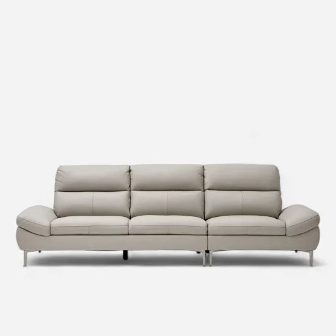

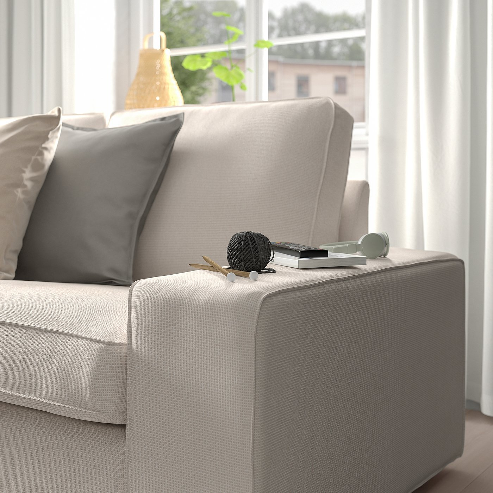
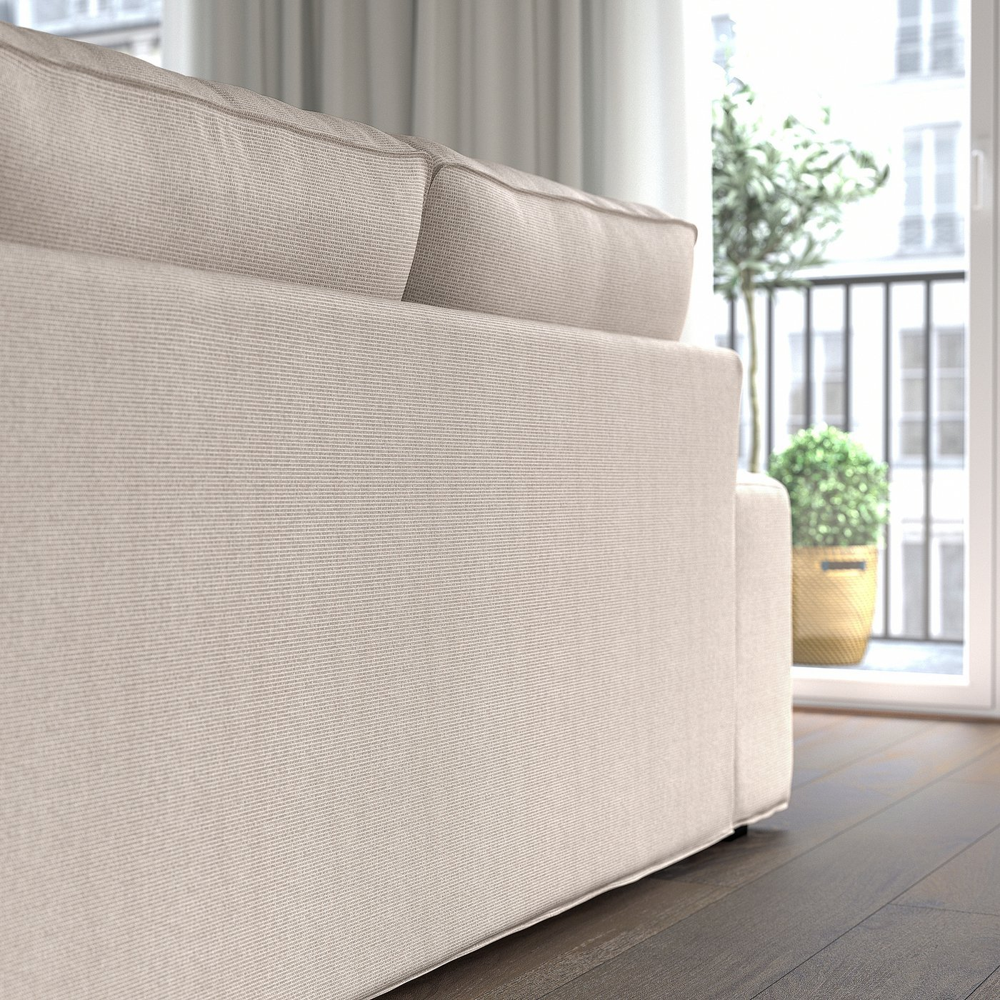
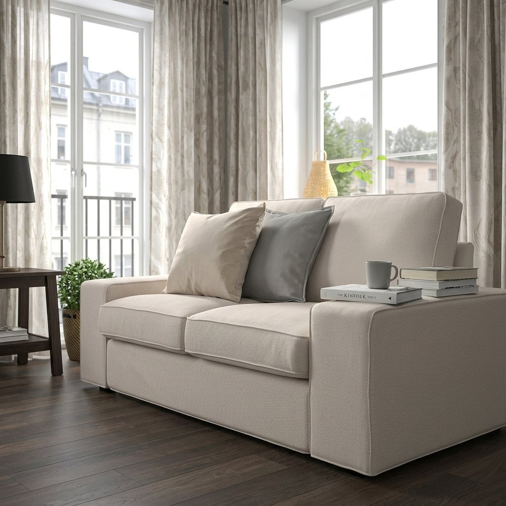
QA 지적 5건
- 소파의 전체 실루엣과 비율은 대체로 유사하나, 등받이 쿠션이 약간 더 두껍고 높아 보임
- 팔걸이의 두께와 각도는 거의 일치하나, 미세하게 더 각진 느낌이 있음
- 좌방석과 등받이 쿠션의 모서리 라인이 실제보다 약간 더 둥글게 표현됨
- 패브릭 컬러는 실제보다 약간 더 밝고 따뜻한 톤으로 보임
- 패브릭 텍스처는 실제와 거의 유사하나, 약간 더 균일하게 표현됨
전체적으로 KIVIK 2인용 소파의 형태와 디테일을 잘 재현하였으나, 등받이 쿠션의 두께와 높이, 좌방석의 모서리 라인 등에서 미세한 차이가 있습니다. 패브릭 컬러와 텍스처도 실제와 거의 유사하지만, 약간 더 밝고 균일하게 표현되었습니다. 명백한 장식 요소는 없으며, 봉제선과 엣지 라인은 정상적으로 구현되었습니다. 그러나 구도 재현도가 매우 낮아 제품 점수는 높으나 최종 합격은 어렵습니다.
구도: 카메라 앵글과 프레이밍이 구도 레퍼런스와 완전히 다릅니다.
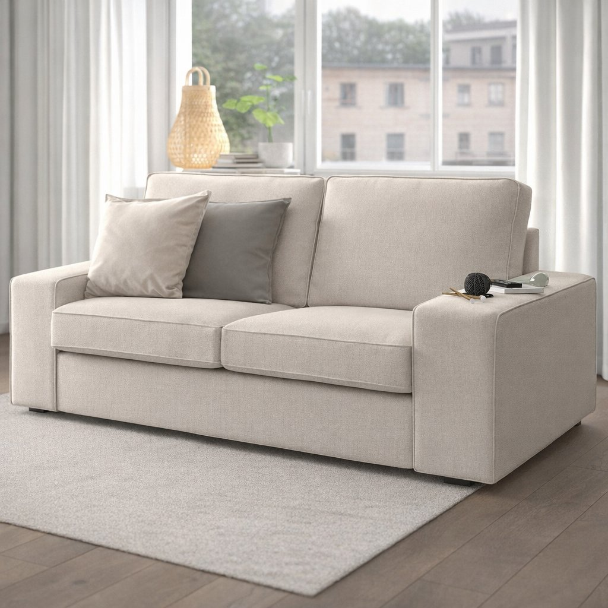
QA 지적 4건
- 소파의 전체 실루엣과 비율은 거의 동일하나, 등받이 쿠션의 두께가 약간 더 두껍게 표현됨
- 팔걸이의 각진 형태와 두께는 잘 재현되었으나, 앞쪽 모서리의 라운딩이 실제보다 약간 더 부드럽게 표현됨
- 좌방석과 등받이 쿠션의 봉제선 위치와 형태는 거의 일치하나, 좌방석의 앞면 하단 봉제선이 약간 더 강조되어 있음
- 패브릭 컬러와 질감은 실제와 매우 유사하나, 생성 이미지에서 약간 더 밝고 균일하게 보임
제품의 전체적인 실루엣, 팔걸이 형태, 쿠션 구성, 패브릭 컬러와 질감 등 주요 요소가 실제 KIVIK 소파와 매우 유사하게 재현되었습니다. 봉제선과 엣지 라인은 정상적인 구조로, 추가 장식이 없으며, 소파의 형태적 차이는 미세한 수준에 그칩니다. 단, 구도 재현도는 매우 낮아 카메라 앵글과 연출이 기준 이미지와 전혀 일치하지 않습니다.
구도: 구도와 카메라 앵글이 완전히 다르며, 프레이밍과 소파 배치가 일치하지 않음.

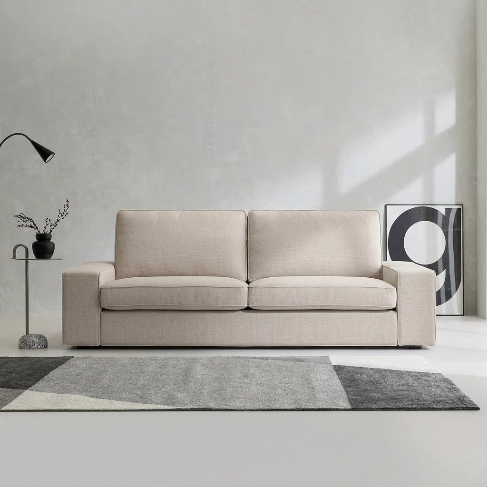
QA 지적 5건
- 소파의 전체 실루엣과 비율은 대체로 유사하나, 생성 결과(B)에서 팔걸이의 두께가 약간 더 두껍고, 좌방석의 높이가 약간 더 낮아 보임
- 팔걸이의 모서리 라운딩이 실제 제품(A)보다 약간 더 각진 느낌이 있음
- 쿠션의 형태와 크기는 거의 동일하나, 등받이 쿠션이 실제 제품보다 약간 더 각지고 빳빳하게 표현됨
- 패브릭 컬러는 실제 제품과 거의 동일하나, 생성 결과에서 약간 더 회색빛이 도는 느낌이 있음
- 패브릭 텍스처는 실제 제품과 유사하나, 생성 결과에서 약간 더 매끈하게 표현됨
전체적으로 IKEA KIVIK 2인용 소파의 형태와 디테일을 잘 재현하였으나, 팔걸이 두께와 모서리 라운딩, 쿠션의 각짐, 패브릭 컬러의 미세한 차이 등에서 실제 제품과 약간의 차이가 존재합니다. 패브릭 텍스처도 실제보다 조금 더 매끈하게 표현되어 있습니다. 명백한 장식 요소는 추가되지 않았으며, 봉제선과 엣지라인은 정상적으로 구현되었습니다. 구도 재현도는 거의 완벽합니다.
구도: 카메라 앵글, 프레이밍, 소파 배치, 주변 소품 위치까지 거의 완벽하게 재현됨.
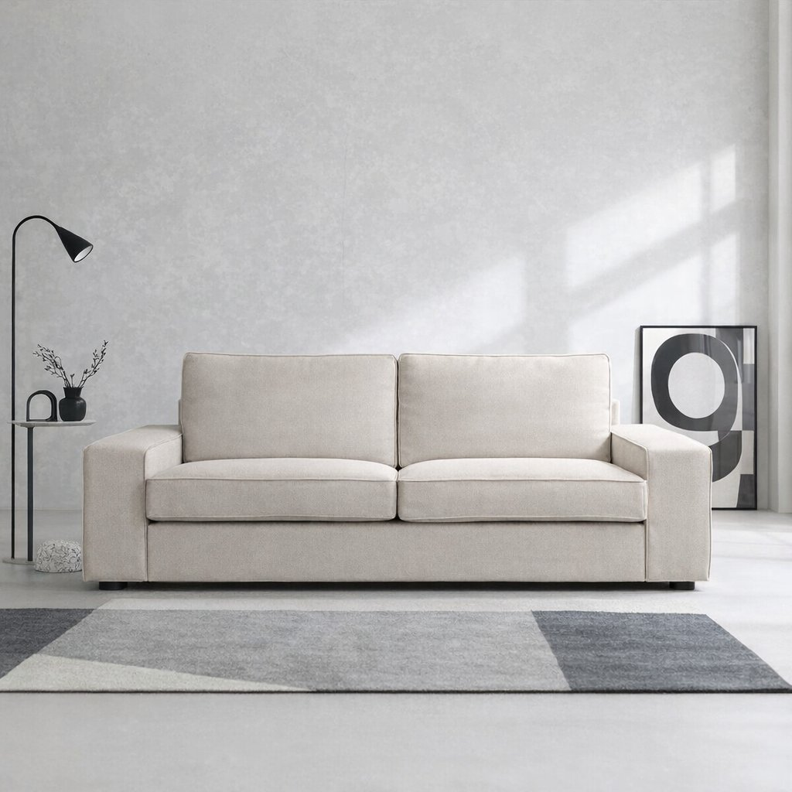
QA 지적 5건
- 소파의 전체 실루엣과 비율은 대체로 유사하나, 생성 결과(B)의 팔걸이가 약간 더 두껍고 각진 느낌이 강함.
- 쿠션의 모양과 두께는 전반적으로 비슷하나, 등받이 쿠션이 레퍼런스(A)보다 약간 더 각지고 높아 보임.
- 팔걸이 상단의 모서리 라운딩이 레퍼런스(A)보다 덜 둥글고 더 각진 형태임.
- 패브릭 컬러는 거의 동일하나, 생성 결과(B)가 약간 더 회색빛이 도는 느낌이 있음.
- 패브릭 텍스처가 레퍼런스(A)보다 다소 부드럽고 균일하게 표현되어 실제 제품의 직조감이 덜 드러남.
전체적으로 IKEA KIVIK 2인용 소파의 형태와 비율, 쿠션 구성, 패브릭 컬러가 잘 재현되었으나, 팔걸이의 각진 형태와 두께, 등받이 쿠션의 각짐, 패브릭 텍스처의 부드러운 표현 등에서 미세한 차이가 있음. 그러나 명백한 장식 요소는 추가되지 않았으며, 전반적으로 제품 원형이 잘 보존되어 높은 점수를 부여함.
구도: 카메라 앵글, 프레이밍, 소품 배치, 조명 등 모든 구도가 거의 완벽하게 일치함.

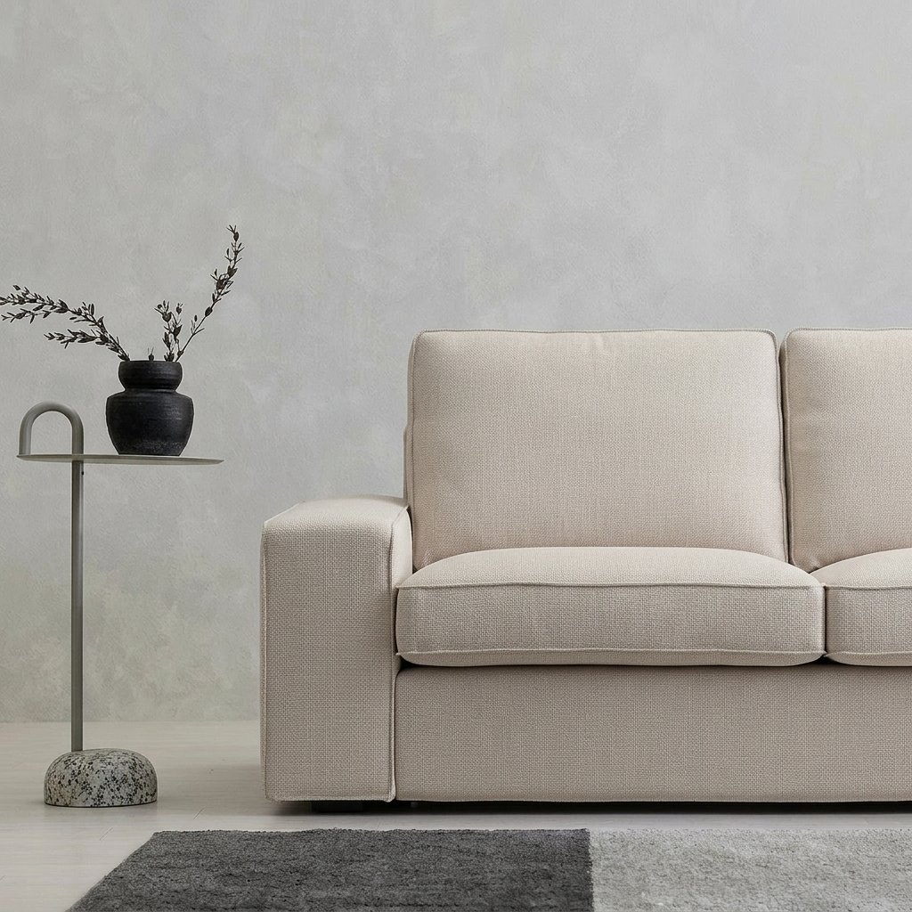
QA 지적 5건
- 소파의 실루엣은 전반적으로 유사하나, 등받이 쿠션의 높이가 레퍼런스보다 약간 낮아 보임
- 팔걸이의 두께와 각도는 대체로 비슷하나, 레퍼런스보다 약간 더 각진 느낌이 있음
- 좌방석과 등받이 쿠션의 봉제선 위치와 형태는 거의 일치하나, 등받이 쿠션의 모서리 라인이 레퍼런스보다 덜 둥글고 약간 각져 있음
- 패브릭 컬러는 거의 동일하나, 생성 결과가 약간 더 밝고 노란빛이 도는 느낌이 있음
- 패브릭 텍스처는 레퍼런스와 유사하나, 생성 결과가 약간 더 거칠게 표현됨
전체적으로 IKEA KIVIK 2인용 소파의 형태와 디테일을 잘 재현하였으나, 등받이 쿠션의 높이와 모서리 라인에서 약간의 차이가 있으며, 패브릭 컬러와 텍스처도 미세하게 다름. 봉제선 등 구조적 요소는 정상적으로 구현되어 감점 사유가 아니며, 명백한 장식 요소는 추가되지 않음. 구도 재현도는 매우 우수하나, 제품의 미세한 형태 및 질감 차이로 인해 90점 이상이지만 S 등급에는 미치지 못함.
구도: 카메라 앵글, 프레이밍, 소파 배치, 주변 소품까지 거의 완벽하게 일치함.
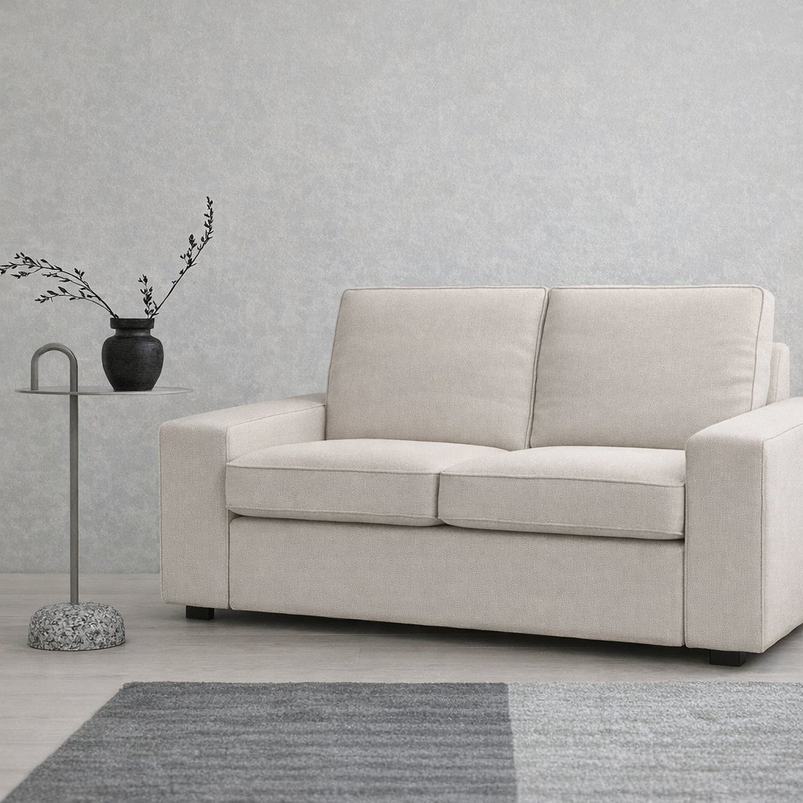
QA 지적 5건
- 소파의 전체 실루엣과 비율은 거의 동일하나, 생성 결과(B)의 다리가 레퍼런스(A)보다 약간 더 짧고 어둡게 표현됨.
- 팔걸이의 두께와 각도는 대체로 일치하나, 생성 결과(B)에서 약간 더 각진 느낌이 있음.
- 쿠션의 모양과 분리선, 봉제선은 잘 재현되었으나, 등받이 쿠션이 레퍼런스(A)보다 약간 더 각지고 평평하게 보임.
- 패브릭 컬러는 거의 동일하나, 생성 결과(B)가 약간 더 밝고 차가운 톤임.
- 패브릭 텍스처는 실제 제품과 유사하나, 생성 결과(B)에서 약간 더 균일하고 인공적인 느낌이 있음.
전체적으로 IKEA KIVIK 2인용 소파의 형태, 비율, 팔걸이, 쿠션 구조, 패브릭 컬러와 텍스처가 매우 충실하게 재현되었습니다. 다리의 길이와 색상, 쿠션의 각도 등에서 미세한 차이가 있으나, 실제 제품과 구분이 어려울 정도로 유사합니다. 명백한 장식 요소는 추가되지 않았으며, 봉제선과 엣지라인은 정상적인 구조로 판단됩니다. 구도 역시 거의 완벽하게 일치하여, 제품 충실도와 구도 재현도 모두 매우 우수합니다.
구도: 카메라 앵글, 프레이밍, 소파 배치, 소품 위치까지 거의 완벽하게 재현됨.
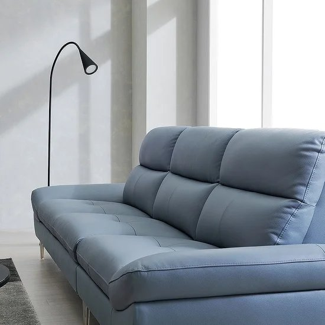
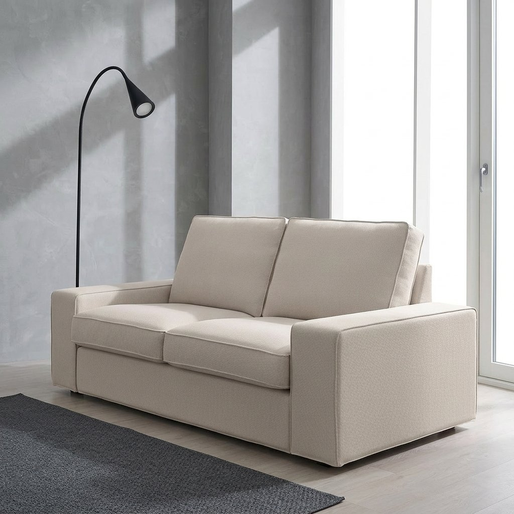
QA 지적 5건
- 소파의 전체 실루엣과 비율은 대체로 유사하나, 등받이 쿠션의 두께가 레퍼런스보다 약간 더 두껍게 표현됨
- 팔걸이의 각도와 두께는 거의 동일하나, 생성 결과에서 약간 더 각진 느낌이 있음
- 좌방석 쿠션의 모서리 라인이 레퍼런스보다 살짝 더 둥글게 표현됨
- 패브릭 컬러는 거의 동일하나, 생성 결과가 약간 더 밝고 차가운 톤임
- 패브릭 텍스처는 레퍼런스보다 약간 더 매끈하게 표현됨
생성 결과의 소파는 전체적인 실루엣, 팔걸이 형태, 쿠션 구성 등에서 레퍼런스와 매우 유사하며, 패브릭 컬러와 텍스처도 거의 일치합니다. 등받이 쿠션 두께와 좌방석 모서리의 미세한 차이, 그리고 약간 더 밝은 색감이 있으나, 이는 사진 노이즈 수준의 사소한 차이에 해당합니다. 명백한 장식 요소는 추가되지 않았으며, 봉제선과 엣지라인은 정상 구조로 판단됩니다. 전반적으로 제품 원형이 매우 잘 보존되었습니다.
구도: 카메라 앵글, 프레이밍, 소파 배치가 거의 완벽하게 일치함.
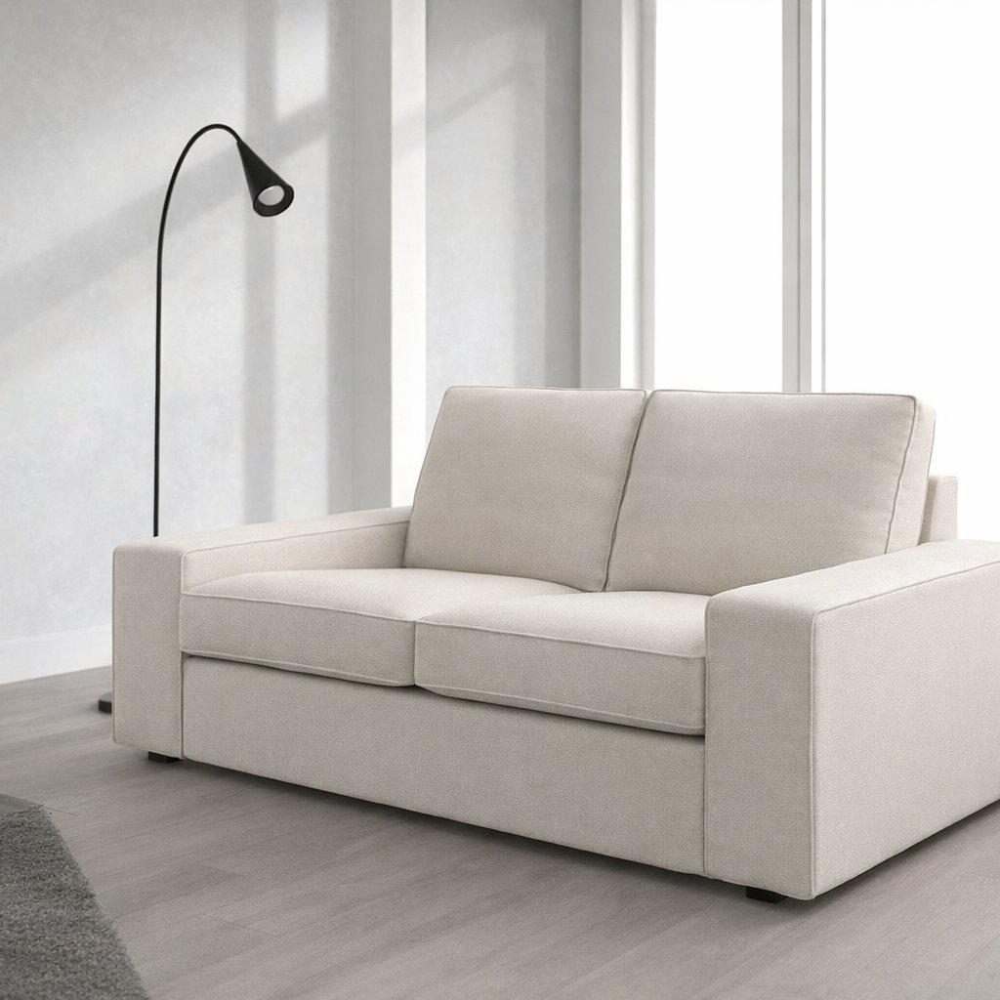
QA 지적 5건
- 소파의 전체 실루엣과 비율은 대체로 일치하나, 생성 결과의 소파가 약간 더 낮고 넓어 보임
- 팔걸이의 두께와 각도는 거의 동일하나, 생성 결과에서 약간 더 각진 느낌이 있음
- 등받이와 좌방석 쿠션의 두께 및 각진 정도가 실제 제품보다 약간 더 뚜렷함
- 패브릭 컬러는 실제 제품과 거의 동일하나, 생성 결과가 약간 더 밝고 차가운 톤임
- 패브릭 텍스처는 실제 제품과 유사하나, 생성 결과에서 약간 더 매끈하게 표현됨
전체적으로 IKEA KIVIK 2인용 소파의 형태, 팔걸이, 쿠션 구조, 패브릭 컬러와 텍스처가 매우 충실하게 재현되었으나, 소파의 비율이 약간 더 낮고 넓어 보이며, 쿠션의 각진 정도와 패브릭의 질감이 실제보다 살짝 더 매끈하게 표현된 점이 감점 요인입니다. 명백한 장식 요소는 없으며, 봉제선과 엣지라인은 정상적으로 구현되었습니다. 구도 재현도는 거의 완벽합니다.
구도: 카메라 앵글, 프레이밍, 소파 배치, 배경 소품까지 거의 완벽하게 재현됨.
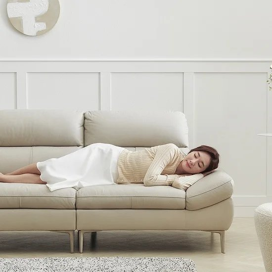
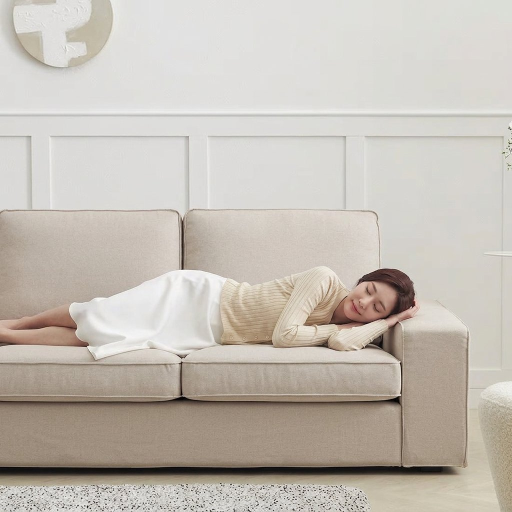
QA 지적 5건
- 실제 KIVIK 소파보다 등받이 쿠션이 약간 더 높고 두꺼워 보임
- 팔걸이의 두께와 각도가 실제보다 약간 더 각진 형태로 표현됨
- 좌방석과 등받이 쿠션의 봉제선 위치가 실제와 약간 다름
- 소파 하단의 받침대(다리)가 보이지 않음
- 패브릭 질감이 실제보다 약간 더 부드럽고 균일하게 표현됨
소파의 전체적인 실루엣과 비율, 팔걸이 형태, 쿠션 구성 등은 KIVIK 제품과 매우 유사하게 재현되었으나, 등받이 쿠션의 두께와 높이, 봉제선 위치, 하단 받침대 미노출 등에서 약간의 차이가 있습니다. 패브릭 컬러와 질감도 실제와 거의 유사하나, 약간 더 부드럽게 표현되었습니다. 명백한 장식 요소는 추가되지 않았으며, 봉제선은 정상 구조로 간주하여 감점하지 않았습니다. 전반적으로 제품의 원형이 잘 보존된 결과입니다.
구도: 카메라 앵글, 인물 위치, 프레이밍이 거의 동일하게 재현됨.
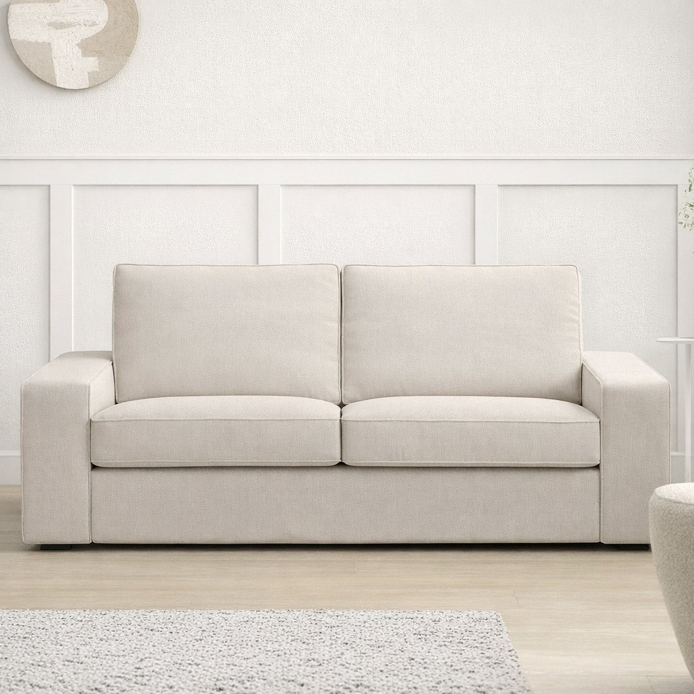
QA 지적 4건
- 등받이 쿠션이 레퍼런스보다 약간 더 두껍고 각이 덜 잡혀 있음
- 좌방석과 등받이 쿠션의 경계선이 레퍼런스보다 살짝 더 둥글게 표현됨
- 팔걸이의 상단 모서리가 레퍼런스보다 약간 더 두껍고 각이 덜함
- 소파 하단의 베이스 부분이 레퍼런스보다 살짝 더 높아 보임
전체적으로 KIVIK 2인용 소파의 형태와 디테일을 잘 재현하였으나, 등받이 쿠션과 팔걸이의 각진 정도, 쿠션 경계선의 표현 등에서 미세한 차이가 존재합니다. 패브릭 컬러와 질감은 매우 유사하며, 불필요한 장식 요소는 추가되지 않았습니다. 하지만 소파의 실루엣과 일부 디테일에서 레퍼런스와의 차이가 분명히 보여 95점 이상에는 미치지 못합니다.
구도: 카메라 앵글, 프레이밍, 배경, 소파 배치가 거의 동일하게 재현됨.
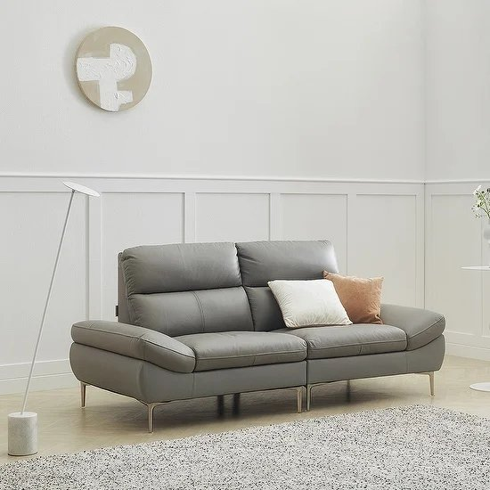
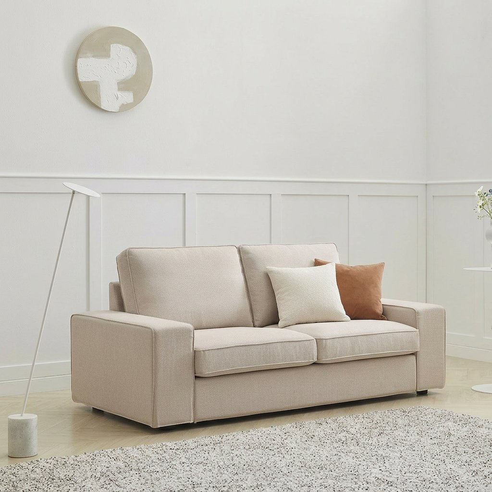
QA 지적 5건
- 소파의 실루엣과 비율이 레퍼런스에 비해 약간 더 낮고 넓어 보임
- 팔걸이의 두께와 각도가 레퍼런스보다 약간 더 두껍고 각진 느낌
- 좌방석과 등쿠션의 모서리 라인이 레퍼런스보다 살짝 더 둥글게 표현됨
- 패브릭 컬러가 레퍼런스보다 미세하게 더 따뜻한 베이지 톤임
- 패브릭 텍스처가 레퍼런스보다 약간 더 부드럽고 균일하게 보임
전체적으로 IKEA KIVIK 2인용 소파의 형태와 디테일을 매우 충실하게 재현하였으나, 실루엣이 약간 더 낮고 넓게 표현되었고, 팔걸이와 쿠션의 각진 정도, 패브릭 컬러와 텍스처에서 미세한 차이가 존재합니다. 봉제선이나 엣지 라인은 정상 구조로 간주되어 감점 사유가 아니며, 명백한 장식 요소는 추가되지 않았습니다. 구도 재현도는 거의 완벽하나, 제품 원형 보존 측면에서 소폭의 차이로 90점 미만이 아니므로 'retry' 판정입니다.
구도: 카메라 앵글, 프레이밍, 소파 배치, 소품 위치까지 거의 완벽하게 일치함.
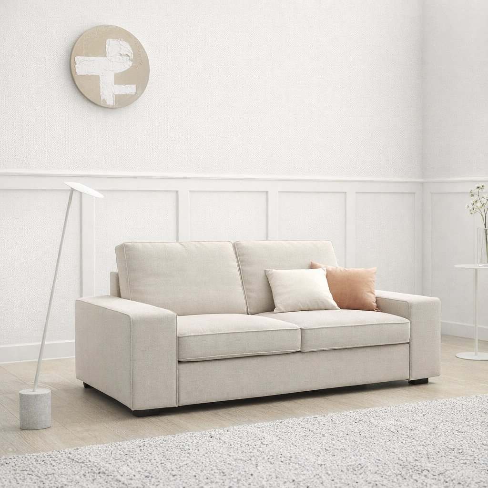
QA 지적 6건
- 소파의 전체 실루엣과 비율은 대체로 유사하나, 생성 결과(B)에서 다리 부분이 더 짧고 두껍게 표현되어 실제 제품(A)보다 무거운 인상을 준다.
- 팔걸이의 두께와 각도는 전반적으로 잘 재현되었으나, 실제 제품(A)보다 약간 더 각진 느낌이 있다.
- 등받이와 좌방석 쿠션의 두께, 모서리 라인, 봉제선 등은 실제 제품과 거의 동일하나, 쿠션의 각이 실제보다 약간 더 뚜렷하게 표현됨.
- 패브릭 컬러는 실제 제품(A)과 거의 동일하나, 생성 결과(B)에서 약간 더 밝고 노란빛이 도는 느낌이 있다.
- 패브릭 텍스처는 실제 제품과 유사하나, 생성 결과(B)에서는 질감이 약간 더 부드럽고 균일하게 표현됨.
- 명백한 장식 요소(버튼, 터프팅, 프린트 무늬 등)는 추가되지 않았음.
생성 결과(B)는 IKEA KIVIK 2인용 소파의 주요 형태, 팔걸이, 쿠션 구조, 패브릭 컬러와 텍스처를 매우 충실하게 재현하였으나, 다리의 두께와 비율, 패브릭의 미세한 색감 차이, 쿠션 각의 표현 등에서 약간의 차이가 존재합니다. 명백한 장식 요소는 추가되지 않았으며, 전체적으로 실제 제품과 매우 유사하나, 미세한 형태 및 색감 차이로 인해 94점(A등급)으로 평가합니다. 구도 재현도는 거의 완벽합니다.
구도: 카메라 앵글, 프레이밍, 소파 배치, 소품 위치 등 거의 완벽하게 재현됨.

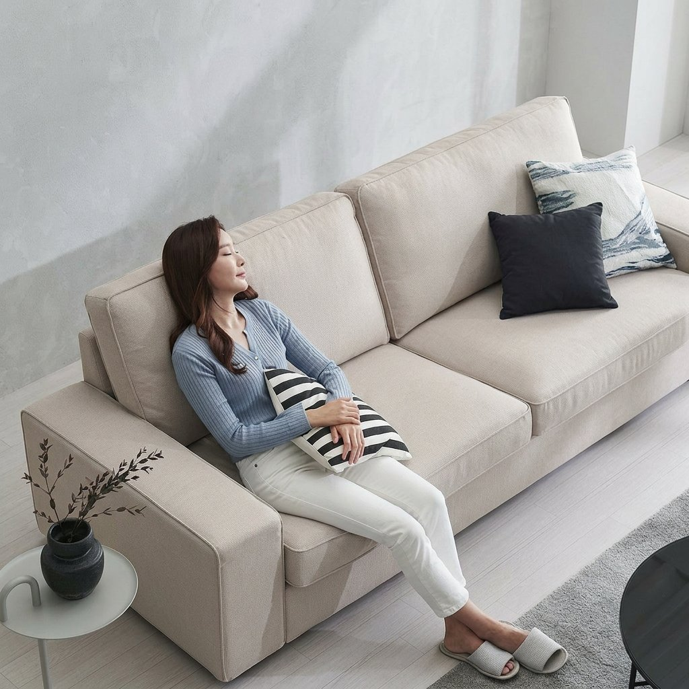
QA 지적 6건
- 소파의 전체 실루엣이 KIVIK보다 더 길고 3인용 이상으로 보임
- 팔걸이 두께와 형태는 유사하나, KIVIK 특유의 각진 느낌이 덜함
- 좌방석과 등쿠션이 KIVIK보다 더 얇고, 쿠션의 각이 더 둥글게 처리됨
- KIVIK의 등쿠션은 분리형 두 개이나, 생성 결과는 더 길고 연속적인 등쿠션처럼 보임
- 패브릭 컬러는 유사하나, 미세하게 더 밝고 노란빛이 도는 느낌
- 패브릭 텍스처가 KIVIK의 촘촘한 직조감보다 더 부드럽고 평면적으로 표현됨
생성 결과의 소파는 KIVIK 2인용 소파와 비교했을 때 전체 실루엣이 더 길고, 좌방석과 등쿠션의 비율 및 형태가 다소 다릅니다. 팔걸이의 두께와 형태는 유사하나, KIVIK 특유의 각진 느낌이 부족합니다. 쿠션의 디테일도 KIVIK의 분리형 구조와 달리 연속적으로 보이며, 패브릭 텍스처 역시 실제 제품보다 더 평면적으로 표현되었습니다. 색상은 유사하나 미세한 차이가 있습니다. 명백한 장식 요소는 없으나, 전반적으로 제품 원형 보존이 부족하여 점수가 낮게 책정되었습니다.
구도: 카메라 앵글, 인물 포즈, 소파 배치, 프레이밍이 거의 동일하게 재현됨.
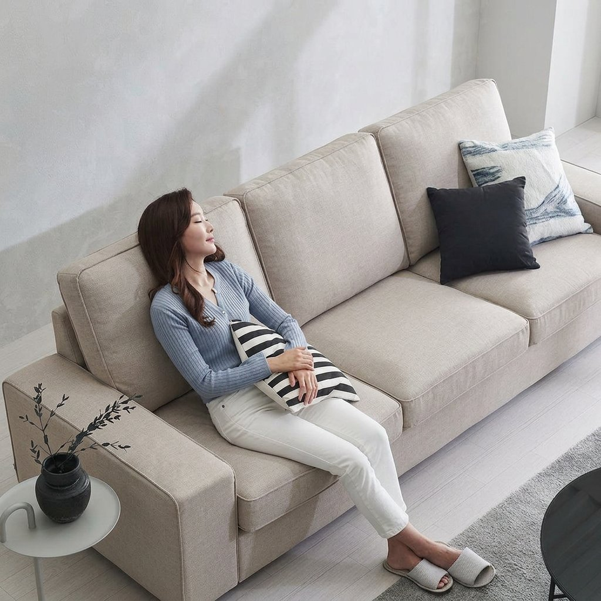
QA 지적 7건
- B의 소파는 KIVIK 2인용이 아닌 3인 이상 좌석으로 보이며, 전체 실루엣이 더 길고 좌방석이 3개로 분리되어 있음
- 팔걸이의 두께와 각도는 유사하나, B의 팔걸이가 약간 더 두껍고 각진 느낌이 덜함
- 등받이 쿠션이 KIVIK보다 더 높고 두꺼우며, KIVIK 특유의 낮고 각진 등받이와 다름
- 좌방석과 등받이 쿠션의 비율이 KIVIK보다 더 큼
- 패브릭 컬러는 KIVIK의 트레순드 라이트 베이지와 유사하나, 약간 더 노란빛이 도는 느낌
- 패브릭 텍스처는 KIVIK의 직조감이 잘 표현되어 있으나, 약간 더 부드럽고 균일하게 보임
- 명백한 장식(버튼, 터프팅, 프린트 등)은 없음
B의 소파는 전체적인 컬러와 패브릭 질감, 팔걸이 형태 등에서 KIVIK과 유사성을 보이나, 좌방석 개수와 실루엣 비율, 등받이 쿠션의 높이와 두께 등에서 명확한 차이가 있습니다. 특히 KIVIK 2인용의 낮고 각진 등받이와 달리 B는 더 높고 두꺼운 등받이, 3인용 이상의 길이, 좌방석 3분할 등 구조적 차이가 큽니다. 명백한 장식 요소는 없으나, 제품 원형 보존 측면에서 의미 있는 차이가 있어 B등급으로 평가합니다.
구도: 카메라 앵글, 인물 포즈, 프레이밍, 소파 배치가 거의 동일하게 재현됨.
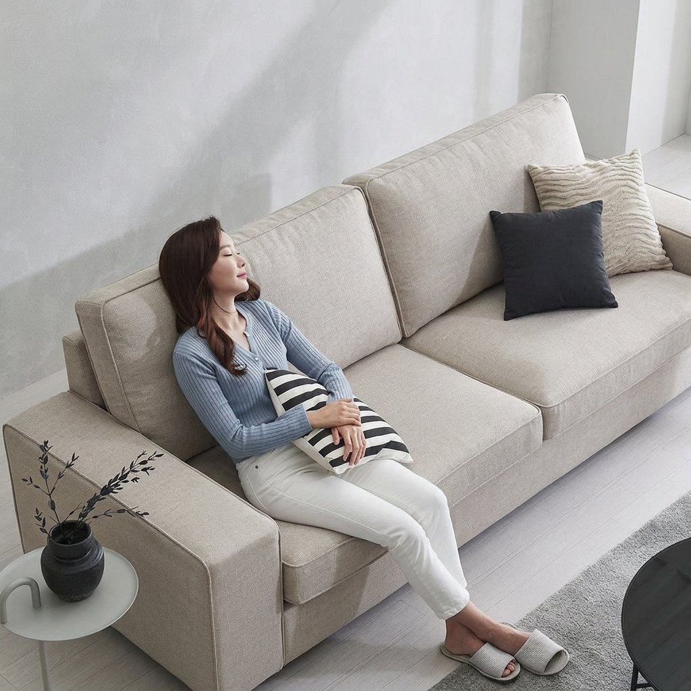
QA 지적 6건
- 소파의 전체 실루엣이 KIVIK 2인용 소파보다 길고 3인용 혹은 그 이상으로 보임
- 팔걸이 두께와 형태는 유사하나, B의 소파가 더 길고 좌방석이 3개로 분할되어 있음
- KIVIK은 2인용으로 좌방석 2개, 등쿠션 2개이나 B는 3개로 나뉨
- 방석과 등쿠션의 비율이 KIVIK보다 더 길고 얇아 보임
- 패브릭 컬러는 유사하나, B의 소파가 약간 더 노란빛이 도는 베이지임
- 패브릭 텍스처는 KIVIK과 비슷하나, B의 소파가 약간 더 거칠게 표현됨
B의 소파는 전체적인 팔걸이 형태와 패브릭 질감, 컬러 등은 KIVIK과 유사하나, 가장 큰 차이점은 소파의 크기와 좌방석/등쿠션의 개수 및 비율입니다. KIVIK은 2인용으로 좌방석과 등쿠션이 각각 2개이나, B는 3개로 분할되어 있어 제품 원형이 크게 다릅니다. 실루엣도 더 길고, 쿠션 비율도 얇아 보입니다. 패브릭 컬러와 텍스처는 유사하나 약간의 차이가 있습니다. 명백한 장식 요소는 없으나, 제품의 핵심 구조가 달라 점수가 낮아졌습니다.
구도: 카메라 앵글, 인물 포즈, 프레이밍, 소품 배치 모두 거의 동일하게 재현됨.
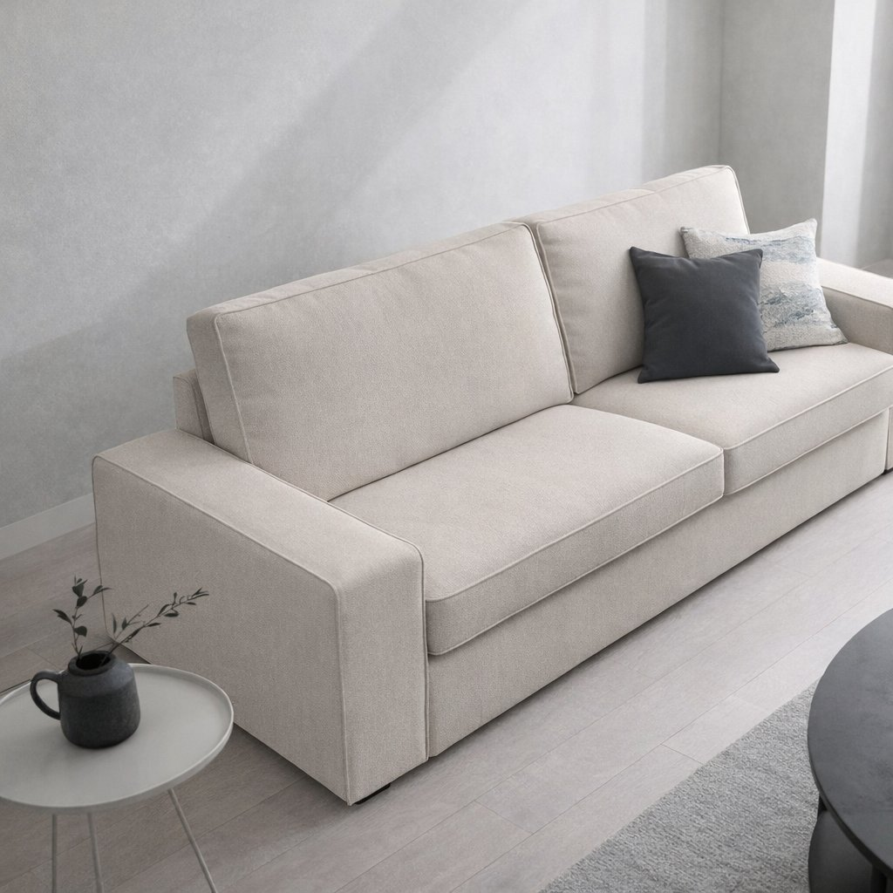
QA 지적 7건
- 소파의 전체 실루엣과 비율은 대체로 유사하나, 생성 결과(B)의 소파가 약간 더 길고 좌방석이 더 넓어 보임
- 팔걸이의 두께와 각도는 전반적으로 비슷하나, B의 팔걸이가 약간 더 두껍고 각진 느낌이 있음
- 등받이 쿠션의 두께와 높이가 레퍼런스(A)보다 약간 더 높고 두꺼워 보임
- 방석과 등받이 쿠션의 모서리 봉제선, 엣지 라인은 정상적으로 구현되어 있음
- 패브릭 컬러는 거의 동일하나, B가 약간 더 밝고 미세하게 회색빛이 도는 느낌
- 패브릭 텍스처는 자연스럽게 재현되었으나, A의 실제 텍스처보다 약간 더 부드럽고 균일하게 표현됨
- 명백한 장식(버튼, 터프팅, 프린트 무늬 등)은 없음
전체적으로 IKEA KIVIK 2인용 소파의 형태와 디테일을 충실하게 재현하였으나, 소파의 길이와 좌방석 비율이 약간 더 넓고, 팔걸이 두께와 등받이 쿠션의 두께가 미세하게 다름. 패브릭 컬러와 텍스처도 거의 유사하나, 실제 제품 대비 약간 더 밝고 부드러운 느낌이 있음. 명백한 장식 요소는 없으며, 봉제선과 엣지 라인은 정상적으로 구현됨. 구도 재현도는 매우 높으나, 제품의 미세한 비율 차이로 인해 90점 미만이 아니므로 'retry' 판정.
구도: 카메라 앵글, 프레이밍, 소파 배치, 주변 소품 위치까지 거의 완벽하게 재현됨.
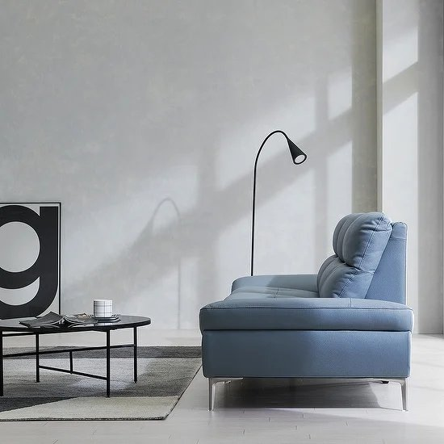
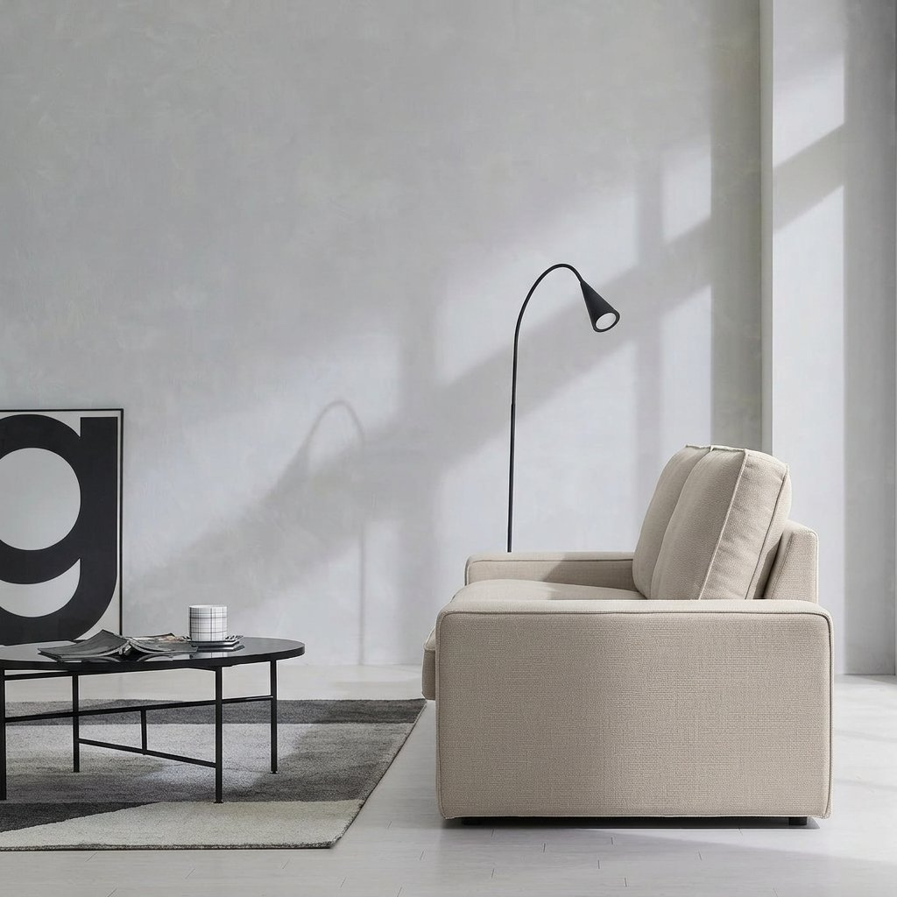
QA 지적 6건
- 소파의 전체 실루엣과 비율은 대체로 유사하나, 등받이 쿠션이 레퍼런스보다 약간 더 두껍고 높아 보임
- 팔걸이의 두께와 각도는 대체로 일치하나, 생성 결과의 팔걸이가 약간 더 각진 느낌이 있음
- 좌방석과 등받이 쿠션의 분리선(봉제선)은 정상적으로 구현되어 있으나, 쿠션의 모서리 라인이 레퍼런스보다 덜 둥글고 각진 형태임
- 패브릭 컬러는 레퍼런스의 트레순드 라이트 베이지와 거의 유사하나, 조명 영향으로 약간 더 밝게 표현됨
- 패브릭 텍스처는 실제 제품과 유사하게 표현되었으나, 약간 더 균일하고 매트하게 보임
- 명백한 장식 요소(버튼, 터프팅, 프린트 무늬 등)는 없음
전체적으로 IKEA KIVIK 2인용 소파의 형태와 디테일을 잘 재현하였으나, 등받이 쿠션의 두께와 높이, 쿠션 모서리의 각짐 등에서 미세한 차이가 존재합니다. 팔걸이의 각도와 두께는 거의 일치하나, 생성 결과가 약간 더 각진 느낌을 줍니다. 패브릭 컬러와 텍스처는 실제 제품과 매우 유사하나, 조명 영향으로 약간 밝고 텍스처가 더 균일하게 보입니다. 명백한 장식 요소는 없으므로 ornament_fidelity는 만점입니다. 구도 재현도는 거의 완벽합니다. 그러나 제품의 미세한 형태 차이로 인해 90점 이상이지만 95점에는 미치지 못해 tier A, verdict는 retry입니다.
구도: 카메라 앵글, 프레이밍, 소파 배치, 주변 소품 위치까지 거의 완벽하게 재현됨.
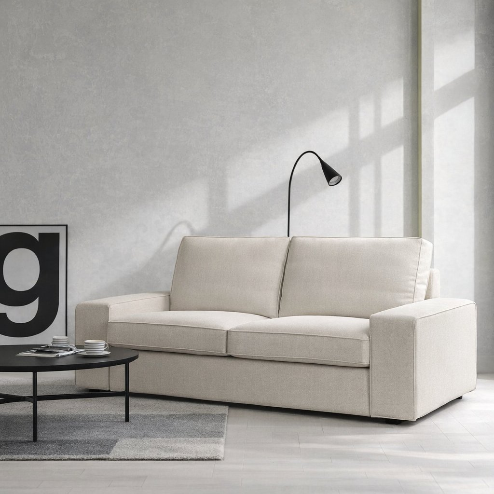
QA 지적 5건
- 소파의 전체 실루엣과 비율은 대체로 유사하나, 등받이 쿠션이 레퍼런스보다 약간 더 낮고 평평하게 표현됨
- 팔걸이의 두께와 각도는 거의 일치하나, 레퍼런스보다 약간 더 각진 느낌이 있음
- 좌방석과 등받이 쿠션의 봉제선 및 엣지 라인은 정상적으로 구현되어 있으나, 쿠션의 볼륨감이 레퍼런스보다 다소 부족함
- 패브릭 컬러는 실제 제품과 거의 동일하나, 조명 영향으로 약간 더 밝게 보임
- 패브릭 텍스처는 실제 제품과 유사하나, 미세한 직조감이 다소 덜 표현됨
전체적으로 KIVIK 2인용 소파의 형태와 디테일을 잘 재현하였으나, 등받이 쿠션의 높이와 볼륨감이 다소 부족하고, 패브릭 텍스처의 미세한 직조감이 약하게 표현되었습니다. 팔걸이와 실루엣은 거의 일치하나, 약간 더 각진 느낌이 있습니다. 색상은 거의 동일하나 조명 영향으로 약간 밝게 보입니다. 명백한 장식 요소는 없으며, 봉제선과 엣지 라인은 정상적으로 구현되었습니다. 구도는 레퍼런스와 달리 정면 위주로 촬영되어, 측면 구도와 프레이밍이 재현되지 않았습니다.
구도: 카메라 각도와 소파 배치가 다르며, 프레이밍도 정면 위주로 변경됨.